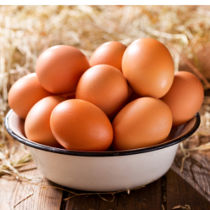
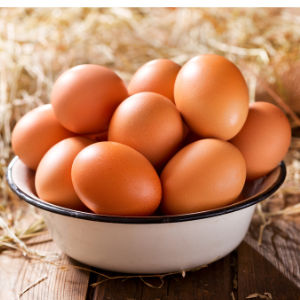

Chorizo Scotch quail’s eggs
By Miriam Nice
- Prep cook: 10 mins
- A challenge
- Makes 12
Upgrade this picnic family favourite with a tangy chorizo and blanched almond shell, covering perfectly soft-set yolks

By Miriam Nice
Upgrade this picnic family favourite with a tangy chorizo and blanched almond shell, covering perfectly soft-set yolks
Fill a large pan with water and a good-sized bowl with iced water. Bring the water in the pan to a rolling boil, add the vinegar, then slowly lower in your quail’s eggs with a spoon. Let them cook for 1 min, then quickly take the pan off the heat and let them sit in the water for 30 secs. Scoop the eggs out with a slotted spoon and plunge straight into the bowl of iced water. Leave them to cool for 10 mins while you prepare the coatings.
Put the stale bread, almonds and parsley in a food processor and blitz until evenly chopped into very fine pieces, then season well and transfer to a shallow dish. Remove the outer casing from the chorizo and discard it, roughly chop the chorizo and put it in the food processor along with 1 hen’s egg. Blitz briefly until just smooth. Divide the mixture into 12 patties and put them on a plate or tray. Set up 3 bowls with the flour in one, remaining egg, beaten, in the second, and the crumb mix in the third.
Carefully peel the quail’s eggs, taking care not to expose the yolk, which should be softly boiled. Place 1 chorizo patty on top of a piece of cling film. Flatten it as thin you can, then put a quail’s egg on top. Use the cling film to help you draw the edges of the patty up and around the egg until it’s completely enclosed. Twist the ends of the cling film together to tightly form it into a ball. Unwrap the Scotch egg and roll it first in the flour, then dip in the beaten egg, followed by rolling it in the crumb mix. Repeat the beaten egg and crumb mix step to ensure a generous coating, then repeat the whole process for the rest of the eggs.
Half-fill a medium-sized saucepan with sunflower oil and heat it until it reaches around 180C. Lower in the Scotch eggs using a slotted spoon and fry for 5 mins. Only cook 2 or 3 at a time to avoid overcrowding. If the Scotch eggs are browning very quickly, turn the heat down, but do leave them in the oil for the full 5 mins to ensure the chorizo is cooked through. When done, scoop them out with a slotted spoon onto a plate lined with kitchen paper to absorb some of the oil. Repeat with all the eggs. While still hot but cool enough to be handled, cut each in half and arrange on a platter.
In a small bowl, stir the mayonnaise and smoked paprika together, and serve as a dip on the side.